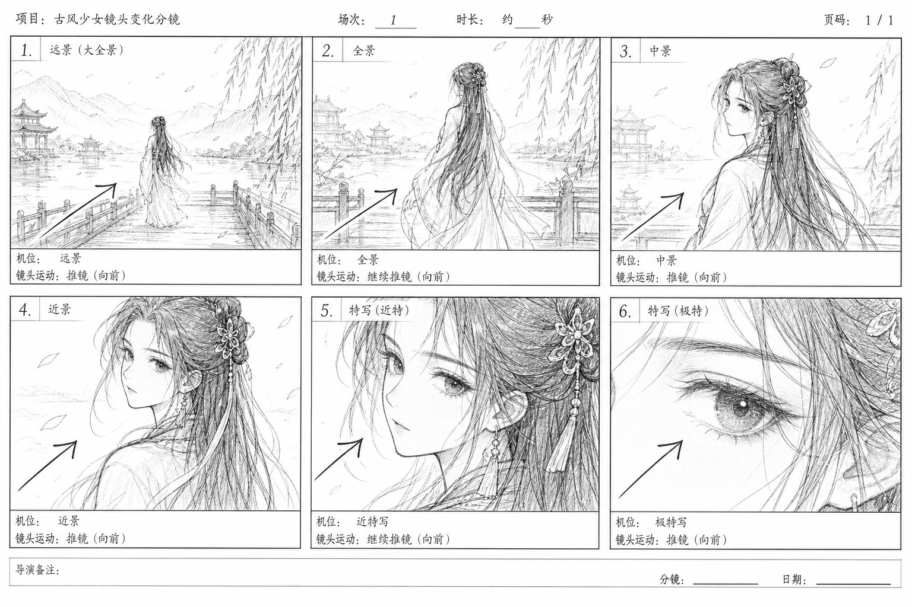
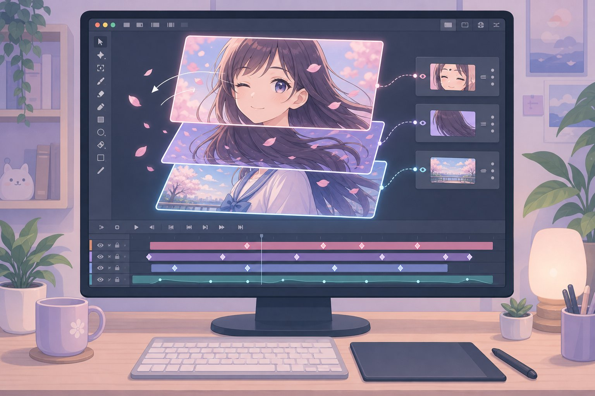
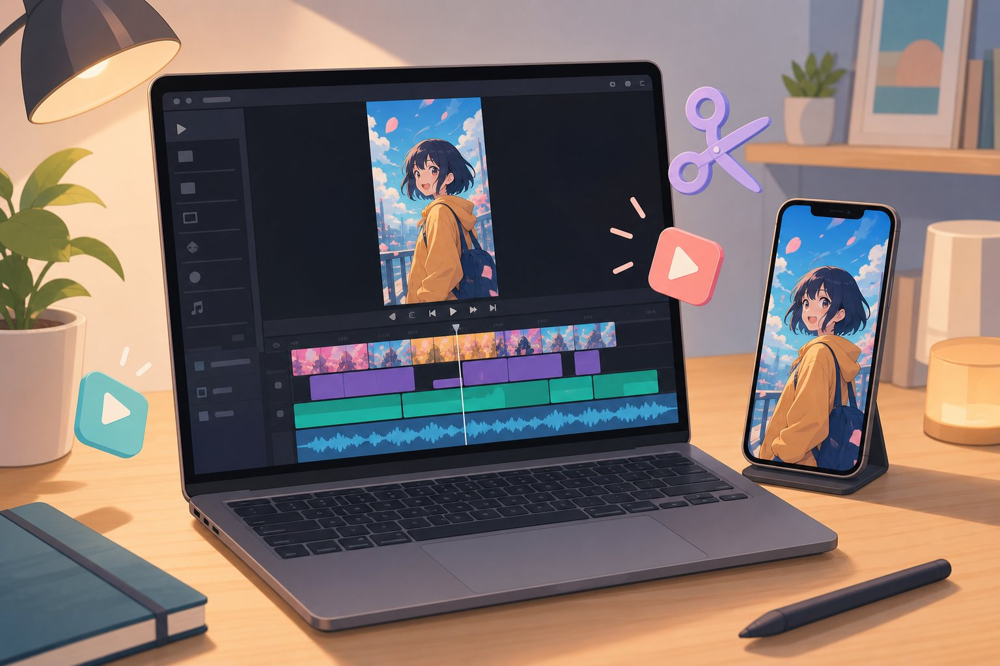
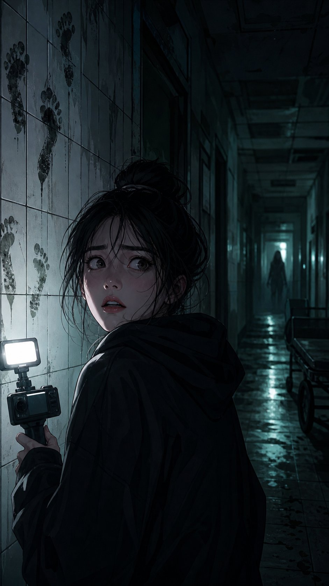

第 0 章先搞懂漫剧到底是什么
想象一下：你刷到一条竖屏视频，画面是精美的漫画风，人物会眨眼、转头，背景有飘落的花瓣，耳边传来配音和 BGM，剧情像短剧一样一集接一集——这就是漫剧。
漫剧 vs 其他形式
| 形式 | 画面 | 动态 | 配音 | 成本 | 适合 |
|---|---|---|---|---|---|
| 漫画/条漫 | 静态图 | 无 | 无 | 低 | 喜欢画画的人 |
| 有声剧 | 无画面 | 无 | 有 | 低 | 听故事的人 |
| 真人短剧 | 真人实拍 | 全动态 | 现场收音 | 高 | 有演员/设备的人 |
| 传统动画 | 手绘/3D | 全动态 | 专业配音 | 很高 | 团队 |
| 漫剧 | 漫画风插画 | 局部动态 | AI/真人 | 中低 | 个人/小团队，新手友好 |
漫剧的 4 种常见类型
- 动态漫（图层动画型）：最主流。把漫画拆成人物层、背景层、特效层，做眨眼、口型、推拉镜头。
- 条漫改编型：把现成的条漫直接做动态化，适合有 IP 的团队。
- AI 漫剧：AI 生成画面+配音+动效，速度最快，适合测试题材。
- 竖屏漫剧：专为抖音/快手优化，9:16 竖屏，单集 1-3 分钟，强钩子、强反转。
全流程产出物
| 环节 | 产出物 | 一句话说明 |
|---|---|---|
| 选题 | 一句话梗概 | 决定你做什么，不做错方向 |
| 剧本 | 分集大纲+台词稿 | 决定观众看不看得下去 |
| 分镜 | 分镜表+草图 | 把文字变成镜头 |
| 角色/场景 | 设定表+场景图 | 决定画面好不好看 |
| 配音 | 干声+混音 | 决定情绪对不对 |
| 动态 | 动效工程文件 | 让画面活起来 |
| 剪辑 | 成片 MP4 | 决定节奏和完播率 |
| 发布 | 标题/封面/简介 | 决定有没有人点进来 |
第 1 章工具箱（以豆包为核心）
原则：先用免费工具跑通全流程，再考虑付费升级。全流程只需 2 个核心工具：豆包（AI 大脑）+ 剪映（制作车间）。
| 环节 | 首选（以豆包为准） | 备选 | 说明 |
|---|---|---|---|
| 选题/剧本/台词 | 豆包 | ChatGPT、Kimi | 附录 D 提示词直接出大纲+台词稿 |
| 分镜表 | 豆包 | 手画草图 | 按 6 要素直接输出表格 |
| 画图/生图 | 豆包生图 | 即梦AI、SD本地 | 发附录 B 提示词即可出图 |
| 配音稿 | 豆包（情绪标注稿） | — | 稿子给剪映 AI 配音用 |
| 配音 | 剪映AI配音 | 豆包语音试听、真人 | 音色全剧统一 |
| 动态 | 剪映（关键帧） | AE入门、Live2D免费版 | 新手用剪映足够 |
| 剪辑 | 剪映手机版 | 剪映电脑版、达芬奇 | 配音+动态+剪辑三合一 |
| 封面/字幕 | 剪映、醒图 | Canva | 封面大字对比要强 |
新手推荐的一套组合
- 纯手机路线（零成本）：豆包 App（选题→剧本→分镜→提示词→生图）+ 剪映手机版（配音+动态+剪辑）
- 电脑路线（效率更高）：豆包网页版 + 剪映电脑版（改图用 Krita）
- 进阶路线：豆包打底 + AE 做动态 + PR/达芬奇剪辑 + Live2D 骨骼动画
案例：豆包 + 剪映，10 分钟做出第一条漫剧
- 打开豆包 → 发附录 D「单集剧本提示词」+ 你的选题 → 复制台词稿
- 豆包生图 → 生成 1 张漫画风竖屏图 → 保存到相册
- 打开剪映 → 新建项目 → 导入这张图
- 点击「文本 → 智能配音」→ 粘贴台词 → 选音色 → 生成配音
- 选中图片 → 点击「动画」→ 选「推镜」→ 设置 3 秒；「音频 → 音乐」选 BGM，音量 15%
- 「文本 → 新建文本」输入字幕（黄色描边）→ 导出 1080×1920 → 发布
第 2 章选题与剧本
选题：3 个问题
- 题材对不对？新手优先选：古风甜宠、都市逆袭、霸总虐恋、悬疑恐怖、校园青春。
- 钩子够不够？公式：身份反差 + 悬念 + 情绪，一句话让人想点进来。
- 能不能持续产出？选一个能连载 20 集以上的画风。
古风甜宠：[冷酷王爷] × [穿越小医女] + 一见钟情
都市逆袭：[被抛弃的赘婿] + [隐藏身份] + 打脸逆袭
悬疑恐怖：[深夜直播] + [禁忌规则] + 层层反转
单集结构：3 秒钩子 + 30 秒铺垫 + 60 秒冲突 + 30 秒反转
| 时间 | 作用 | 例子 |
|---|---|---|
| 0-3 秒（钩子） | 必须有冲突或悬念，不能有片头 | 「你不是说你只是个送外卖的吗？！」 |
| 3-30 秒（铺垫） | 交代人物关系和处境 | 快速带入 |
| 30-90 秒（冲突） | 冲突升级，情绪拉满 | 观众开始上头 |
| 90-120 秒（反转） | 抛出新信息或反转 | 逼观众点下一集 |
3 个完整剧本案例
古风甜宠《医妃倾城》第 1 集
梗概：现代外科医生穿越成被冷落的王妃，第一天就救了刺杀王爷的刺客。
- 0-3s 王妃睁眼：「我……穿越了？！」+心跳声
- 3-15s 旁白：三月前她嫁入王府，王爷从未正眼看过她
- 15-40s 刺客闯入，王爷受伤倒地
- 40-70s 王妃按压伤口：「别动！再乱动你会失血过多！」
- 70-100s 王爷睁眼：「你……会医术？」
- 100-120s 王妃内心：这王爷……好像认识我？（悬念黑屏）
✓ 3 秒有穿越钩子，结尾「好像认识我」留悬念
都市逆袭《赘婿归来》第 1 集
梗概：被全家看不起的赘婿，在岳父寿宴上被当众羞辱，却接到「少爷，集团等您回去」。
- 0-3s 岳母摔红包：「你也配吃这顿饭？滚出去！」
- 3-20s 男主低头，众人嘲笑，旁白：他忍了三年
- 20-50s 岳父宣布断绝关系
- 50-80s 手机震动：「少爷，董事长病危，集团等您回去」
- 80-110s 男主抬头，眼神变冷：「好，我这就回去」
- 110-120s 岳母愣住：「他刚才说什么？」（悬念）
✓ 开头羞辱冲突强，「少爷」是身份反差钩子
悬疑恐怖《深夜直播》第 1 集
梗概：主播在废弃医院直播探灵，弹幕刷出「主播，别回头，你身后站着一个人」。
- 0-3s 主播对镜头笑，弹幕：主播，别回头！
- 3-20s 主播转身，空无一人：「哈哈吓我？」
- 20-50s 弹幕刷屏「他动了」，主播笑容僵住
- 50-80s 墙面湿脚印：「这……这脚印哪来的？」
- 80-110s 主播回头，镜头剧烈晃动：「谁？！」
- 110-120s 黑屏，系统音：直播间人数 10 万+
✓ 靠信息差推进，结尾人数暴涨是反转钩子
剧本写作 5 个铁律
- 台词要短：每句不超过 15 字，长台词拆成两句。
- 少旁白，多对话：旁白每集不超过 3 句。
- 每集一个情绪点：甜/虐/爽/吓，整集只打一个情绪。
- 结尾必须留钩子：悬念、反转、危机三选一。
- 先写大纲再写台词：大纲 200 字，台词 300 字。
用豆包 3 分钟写出一集剧本（复制即用）
第 3 章分镜脚本
分镜就是把剧本翻译成镜头。剧本说「王妃救王爷」，分镜要拆成：王妃特写 → 王爷倒地全景 → 王妃冲过去中景 → 按压伤口特写 → 王爷睁眼近景 → 对视特写。

分镜表 6 要素
| 要素 | 说明 | 例子 |
|---|---|---|
| 镜号 | 镜头编号 | 01、02、03 |
| 景别 | 远景/全景/中景/近景/特写 | 特写（只拍脸） |
| 画面内容 | 这一镜拍什么 | 王妃睁眼，惊恐表情 |
| 镜头运动 | 静止/推/拉/摇/跟 | 缓慢推近 |
| 台词/音效 | 这一镜说什么、听什么 | 台词+心跳声 |
| 时长 | 这一镜几秒 | 3 秒 |
景别速查（新手必背）
| 景别 | 作用 | 例子 |
|---|---|---|
| 远景 | 交代环境 | 王府全貌、城市夜景 |
| 全景 | 交代人物位置关系 | 两人站在院子里 |
| 中景 | 拍到腰部以上（对话、动作） | 对话戏常用 |
| 近景 | 拍到肩部以上（情绪、表情） | 情绪戏常用 |
| 特写 | 只拍脸/手/眼睛 | 震惊、流泪、握拳 |
案例 A：《医妃倾城》分镜表（8 镜）
| 镜号 | 景别 | 画面内容 | 镜头运动 | 台词/音效 | 时长 |
|---|---|---|---|---|---|
| 01 | 特写 | 王妃睁眼，瞳孔收缩 | 静止 | 内心：我穿越了？！+心跳 | 3s |
| 02 | 远景 | 王府夜景，灯火 | 缓慢推近 | 旁白：三月前她嫁入王府 | 5s |
| 03 | 中景 | 王爷背对王妃，冷漠转身 | 静止 | 王爷：退下 | 4s |
| 04 | 全景 | 刺客破窗而入，王爷倒地 | 快速摇镜 | 刺客：受死！+刀剑声 | 5s |
| 05 | 中景 | 王妃冲上前，跪地按压伤口 | 跟拍 | 王妃：别动！ | 5s |
| 06 | 特写 | 王妃的手按在伤口上，血流 | 静止 | 紧张鼓点 | 3s |
| 07 | 近景 | 王爷睁眼，第一次认真看她 | 缓慢推近 | 王爷：你会医术？ | 4s |
| 08 | 特写 | 王妃抬头，眼神一顿 | 静止 | 内心：他好像认识我+悬念音 | 3s |
案例 B：羞辱戏分镜（逆袭题材）
要点：先拍羞辱者，再拍被羞辱者，最后拍反转。
| 镜号 | 景别 | 画面内容 | 台词 | 时长 |
|---|---|---|---|---|
| 01 | 近景 | 岳母冷笑，摔红包 | 岳母：滚出去！ | 3s |
| 02 | 特写 | 红包落在男主脚边 | 摔纸声 | 2s |
| 03 | 中景 | 男主低头，众人围笑 | 旁白：他忍了三年 | 5s |
| 04 | 近景 | 岳父宣布断绝关系 | 岳父：不许再踏入！ | 4s |
| 05 | 特写 | 男主手机震动 | 电话铃声 | 2s |
| 06 | 近景 | 男主接电话，眼神变冷 | 电话音：少爷，集团等您 | 4s |
| 07 | 中景 | 男主转身离开，众人愣住 | 岳母：他说什么？ | 4s |
案例 C：恐怖戏分镜（悬疑题材）
要点：先给观众看「异常」，再给主播看「异常」，最后给观众看「更异常」，层层加码。
| 镜号 | 景别 | 画面内容 | 台词/音效 | 时长 |
|---|---|---|---|---|
| 01 | 中景 | 主播对镜头笑，弹幕飘过 | 弹幕：别回头！ | 3s |
| 02 | 全景 | 主播转身，身后空无一人 | 主播：哈哈吓我？ | 4s |
| 03 | 特写 | 弹幕刷屏「他动了」 | 电子音 | 3s |
| 04 | 近景 | 主播笑容僵住 | 主播：别闹了 | 3s |
| 05 | 特写 | 墙面湿脚印 | 脚步声 | 4s |
| 06 | 近景 | 主播颤抖回头 | 主播：谁？！ | 3s |
| 07 | 黑屏 | 只剩系统音 | 人数10万+ | 3s |
新手做分镜的 3 个方法
- 豆包文字分镜（最快，推荐）：把剧本发给豆包，直接要 6 要素表格（提示词见下）。
- 草图分镜：铅笔火柴人草图 + 镜头运动箭头。
- AI 分镜草图：把豆包输出的分镜表逐镜发给豆包生图，生成每镜草图。
第 4 章角色与场景设计
角色设计先做「设定表」：三视图（正/侧/背）+ 表情包（喜/怒/哀/乐）+ 服装配色 + 身高比例。
画风选择
| 题材 | 推荐画风 | 主色 |
|---|---|---|
| 古风甜宠 | 国风厚涂 / 扁平插画 | 粉、青、白 |
| 都市逆袭 | 现代写实风 / 韩漫风 | 黑、白、蓝 |
| 悬疑恐怖 | 暗黑风 / 水彩风 | 黑、灰、血红 |
3 个角色设定案例
古风女主沈清辞
- 身份：现代外科医生穿越成的王妃，25 岁
- 外貌：黑长直发、杏眼、左眼下小痣（识别点）
- 服装：月白交领襦裙+青色披帛（日常）、红色嫁衣（高光戏）
- 配色：肤 #FDE8E0、发 #2B2B2B、衣 #E8F0E8
- 表情包：震惊、冷静、心动、愤怒
都市男主陆沉
- 身份：隐藏身份的集团继承人，28 岁
- 外貌：短发、剑眉、轮廓锋利（前期颓废、后期霸气）
- 服装：前期灰色卫衣+牛仔裤、后期黑西装+金丝眼镜
- 配色：肤 #F5D5C0、发 #1A1A1A、衣 #888888 / #111111
- 表情包：隐忍、冷笑、霸气、震惊
悬疑主播小北
- 身份：探灵主播，22 岁
- 外貌：丸子头、圆脸、笑起来有酒窝
- 服装：黑色卫衣+运动裤+耳机
- 配色：肤 #FDE8E0、发 #3B2B20、衣 #222222
- 表情包：阳光笑、疑惑、惊恐、崩溃
场景设计：3 个场景够用一集
| 场景 | 作用 | 制作要点 |
|---|---|---|
| 主场景 | 80% 戏份都在这 | 做一张大图，靠推拉镜头出变化 |
| 副场景 | 换气、交代环境 | AI 生图快速生成 |
| 特效场景 | 情绪高光（回忆/梦境） | 加滤镜、粒子、转场即可 |
第 5 章配音与音效
配音的 3 种方案
| 方案 | 成本 | 速度 | 效果 | 适合 |
|---|---|---|---|---|
| AI 配音（剪映/豆包） | 免费/低 | 快 | 中上 | 新手、测试题材 |
| 真人配音（自己录） | 免费 | 中 | 看演技 | 有表达欲的人 |
| 专业配音（找人） | 高 | 慢 | 最好 | 有预算的团队 |
配音稿 3 个格式要点
- 标注情绪：（愤怒）你也配吃这顿饭？（颤抖）这……这脚印哪来的？
- 标注停顿：用「……」表示停顿，用「！」表示爆发。
- 分段录制：按分镜分段录，方便后期对齐画面。
3 个配音案例
古风甜宠配音方案
- 王妃：年轻女声，温柔偏冷静，语速 0.95
- 王爷：低沉男声，冷漠偏磁性，语速 0.9
- 王妃（震惊）：「我……穿越了？！」
- 王爷（冷漠）：「退下。」
- 王妃（急切）：「别动！再乱动你会失血过多！」
音效：心跳声、刀剑声、古风弦乐 BGM（15%）
都市逆袭配音方案
- 男主：同一音色，前期压抑、后期霸气，靠语气区分
- 岳母：中年女声，尖酸刻薄，语速 1.1
- 岳母（尖酸）：「你也配吃这顿饭？滚出去！」
- 男主（隐忍）：「好。」→（冷静）：「我这就回去。」
音效：摔纸声、电话铃声、哄笑，BGM 从压抑转霸气
悬疑恐怖配音方案
- 主播：年轻女声，前期阳光、后期颤抖崩溃
- 主播（笑着）：「哈哈，弹幕又在吓我。」
- 主播（颤抖）：「这……这脚印哪来的？」
- 主播（尖叫）：「谁？！出来！」
音效：风声、心跳、脚步、电子音、断电声（占 50%）
第 6 章动态制作（让画面动起来）

5 种手法（由易到难）
| 手法 | 说明 | 工具 | 难度 |
|---|---|---|---|
| 1. 推拉镜头 | 图片缓慢放大/缩小，模拟镜头运动 | 剪映「动画→推镜」 | ★☆☆☆☆ |
| 2. 眨眼/口型 | 眼睛、嘴巴独立图层，循环眨眼，台词时切换口型 | PS 抠图 + 剪映 | ★★☆☆☆ |
| 3. 粒子特效 | 花瓣、雨丝、雪花、光尘 | 剪映特效 / AE 粒子 | ★★☆☆☆ |
| 4. 骨骼动画 | 转头、走路、挥手 | Live2D / Spine | ★★★★☆ |
| 5. AI 动效 | 静态图喂给 AI 视频工具一键生成动态 | 即梦视频等 | ★★☆☆☆ |
3 个动态案例
古风甜宠花瓣 + 推镜
- 图层：背景（桃花树）+ 人物（王妃）+ 前景（花瓣粒子）
- 动态：全景推近到近景（5s）→ 眨眼循环 → 花瓣飘落全程 → 台词口型切换
- 工具：剪映关键帧 + 贴纸 + PS 抠图
效果：3 秒内观众就感受到「这不是静态图」
都市逆袭跟拍 + 眼神
- 图层：背景（寿宴客厅）+ 人物（男主）+ 特效（手机震动）
- 动态：转身跟拍（关键帧平移）→ 眼神从隐忍变冷（换表情图）→ 手机抖动
- 工具：剪映关键帧 + 表情包切换
效果：跟拍有代入感，眼神变化是逆袭高光
悬疑恐怖晃动 + 闪烁
- 图层：背景（废弃医院）+ 人物（主播）+ 特效（灯光闪烁）
- 动态：手持晃动 → 灯光随机闪烁 → 脚印出现时快速摇镜
- 工具：剪映抖动 + 透明度关键帧
效果：晃动+闪烁营造不安感，观众屏住呼吸
动态制作检查清单
- 每张图都有推/拉/摇/跟，没有完全静止超过 3 秒的画面
- 人物有眨眼，台词有口型
- 背景有粒子或光影变化
- 镜头运动方向和剧情一致（推近=情绪聚焦，拉远=交代环境）
第 7 章剪辑与包装

3 个核心：节奏、字幕、BGM
- 节奏：每 3 秒必须有信息点（新台词/新动作/新镜头）。慢镜头只用在情绪高光。
- 字幕：全剧统一字体（思源黑体/站酷快乐体）、字号、颜色、描边，关键词变色。
- BGM：一集 1-2 首，冲突时压低，高光时抬起。
3 个剪辑案例
古风甜宠情绪拉满版
- 节奏：0-3s 快切 → 3-30s 慢铺垫 → 30-90s 快切 → 90-120s 慢推
- 字幕：白字黑描边，关键词「穿越」「医术」粉色
- BGM：钢琴 → 紧张鼓点 → 古风弦乐
- 转场：回忆叠化，现实硬切
都市逆袭爽感版
- 节奏：0-3s 硬切羞辱 → 3-50s 慢铺垫 → 50-80s 快切 → 80-120s 慢推反转
- 字幕：白字黑描边，关键词「少爷」「集团」金色
- BGM：压抑低音 → 骤停 → 霸气鼓点
- 音效：摔纸声+哄笑 → BGM 骤停+低音轰鸣
悬疑恐怖吓人版
- 节奏：全程慢节奏，靠音效和晃动撑恐怖感，不要快切
- 字幕：白字黑描边，弹幕用绿/红区分，制造直播间感
- BGM：环境风声为主，BGM 只在高潮出现
- 转场：只用硬切和黑屏
导出规格（直接抄）
| 项目 | 规格 |
|---|---|
| 分辨率 | 1080×1920（竖屏 9:16） |
| 帧率 | 25fps 或 30fps |
| 码率 | 8-12Mbps |
| 格式 | MP4（H.264） |
| 时长 | 60-180 秒 |
| 文件大小 | 50MB 以内 |
第 8 章发布与运营
平台选择
| 平台 | 适合题材 | 特点 |
|---|---|---|
| 抖音 | 全部题材 | 流量最大，适合冷启动 |
| 快手 | 古风、逆袭 | 用户粘性高，适合连载 |
| B站 | 悬疑、剧情向 | 用户质量高，适合长线 |
| 小程序 | 霸总、甜宠 | 变现快，适合付费连载 |
| 小红书 | 校园、日常 | 适合女性向题材 |
标题、封面、简介
- 标题公式：[冲突/悬念] + [人物] + [反转]，15 字内
- 封面：用最有冲突的一帧，加 3-5 个大字，字号大、对比强
- 简介：一句话梗概 + 「连载中，点关注不迷路」+ 话题标签
3 个发布案例
古风甜宠《医妃倾城》
- 标题：穿越王妃救王爷，冷酷王爷竟说认识她？！
- 封面：按压伤口+对视，加字「他认识我？」
- 时间：19:00-21:00（女性用户活跃时段）
- 运营：评论区置顶「王爷到底认不认识她？」
都市逆袭《赘婿归来》
- 标题：被赶出家门那天，他接到了一个电话
- 封面：被摔红包+转身冷眼，加字「少爷？」
- 时间：12:00-13:00、19:00-21:00 双高峰
- 运营：评论区置顶「他到底是什么身份？」
悬疑恐怖《深夜直播》
- 标题：主播别回头！弹幕说她身后站着人
- 封面：惊恐回头+墙面脚印，加字「别回头」
- 时间：22:00-24:00（夜晚看效果最好）
- 运营：评论区置顶「你们看到脚印了吗？」
第 9 章3 个完整实战案例（从 0 到成片）

案例一：《医妃倾城》古风甜宠
难度 ★★☆☆☆ 约 2 小时 0 元
- 选题（5min）：古风甜宠，梗概「穿越医女 × 冷酷王爷」
- 剧本（15min）：120 秒台词稿，检查钩子/冲突/悬念
- 分镜（10min）：8 镜分镜表，标注景别和时长
- 角色场景（15min）：豆包生图生成设定图+场景图，统一调色
- 配音（10min）：豆包写配音稿 → 剪映 AI 配音，按分镜分段生成
- 动态（20min）：关键帧推镜+花瓣粒子+眨眼口型
- 剪辑（15min）：加字幕/BGM/音效，导出 1080×1920
- 发布（5min）：19:00 发布，评论区置顶引导问题
产出：1 条 120 秒漫剧 · 适合零基础第一次做
案例二：《赘婿归来》都市逆袭
难度 ★★★☆☆ 约 2.5 小时 0-50 元
- 选题（5min）：都市逆袭，梗概「赘婿 × 隐藏身份」
- 剧本（15min）：120 秒台词稿，打磨羞辱戏和反转
- 分镜（10min）：7 镜分镜表，注意羞辱戏镜头顺序
- 角色场景（20min）：豆包生图生成男主两套服装+寿宴客厅，统一冷色调
- 配音（10min）：豆包写配音稿 → 同一音色靠语气区分前后
- 动态（25min）：跟拍转身+眼神切换+手机震动
- 剪辑（20min）：关键词金色字幕，BGM 从压抑转霸气
- 发布（5min）：12:00 和 19:00 双发测试
产出：1 条 120 秒漫剧 · 适合男性向、爽文题材
案例三：《深夜直播》悬疑恐怖
难度 ★★★★☆ 约 3 小时 0-50 元
- 选题（5min）：悬疑恐怖，梗概「探灵直播 × 弹幕警告」
- 剧本（20min）：120 秒台词稿，设计信息差和层层加码
- 分镜（15min）：7 镜分镜表，注意恐怖戏镜头顺序
- 角色场景（20min）：豆包生图生成主播+废弃医院，统一暗黑冷色调
- 配音（15min）：豆包写配音稿 → 从阳光到崩溃的情绪递进，音效占 50%
- 动态（30min）：手持晃动+灯光闪烁+摇镜扫脚印
- 剪辑（25min）：慢节奏，弹幕字幕区分，黑屏转场
- 发布（5min）：22:00 夜晚发布
产出：1 条 120 秒漫剧 · 适合喜欢挑战的人
| 对比项 | 医妃倾城（甜宠） | 赘婿归来（逆袭） | 深夜直播（悬疑） |
|---|---|---|---|
| 难度 | ★★☆☆☆ | ★★★☆☆ | ★★★★☆ |
| 核心难点 | 情绪细腻 | 爽感节奏 | 氛围音效 |
| 适合人群 | 女性向新手 | 男性向新手 | 喜欢挑战的人 |
| 建议顺序 | 第 1 个做 | 第 2 个做 | 第 3 个做 |
第 10 章新手避坑清单 + 30 天学习计划
新手 10 大坑
| # | 坑 | 正确做法 |
|---|---|---|
| 1 | 先画图后写剧本 | 先写剧本分镜，再画图 |
| 2 | 第一条就想做爆款 | 第一条目标是「做完」，不是「爆」 |
| 3 | 每集换画风/换音色 | 全剧统一画风和音色 |
| 4 | 台词太长，观众划走 | 每句台词不超过 15 字 |
| 5 | 画面完全静止 | 每 3 秒必须有动态 |
| 6 | BGM 太大声盖过台词 | BGM 音量 10-20%，台词优先 |
| 7 | 字幕字体不统一 | 全剧用同一字体、字号、颜色 |
| 8 | 结尾没有钩子 | 每集结尾必须留悬念/反转/危机 |
| 9 | 用有版权的音乐图片 | 只用剪映曲库和可商用素材 |
| 10 | 做完不发布，囤着等完美 | 做完就发，用数据指导下一条 |
30 天学习计划
🌱 入门期（第 1-7 天）
学豆包提示词 + 剪映基础 + 看 10 条漫剧拆解 + 写 3 个剧本大纲
产出：3 个大纲
🔥 实战期（第 8-21 天）
按本教程做 3 个完整案例（甜宠→逆袭→悬疑）
产出：3 条成片
🚀 进周期（第 22-30 天）
学 Live2D 或 AE 动态 + 做 1 条进阶漫剧 + 复盘数据
产出：1 条进阶成片 + 复盘报告
附录：可直接复制的模板
分镜表模板：
AI 生图提示词模板（发给豆包生图即可用）：
豆包全流程提示词（D1-D7 复制即用）
D1 选题发散：
D2 单集剧本：
D3 分镜表：
D4 角色设定 + 生图提示词：
D5 场景图提示词：
D6 配音稿（带情绪标注）：
D7 标题封面文案：
发布检查清单：
- 标题 15 字内，有冲突/悬念
- 封面有大字，对比强
- 简介一句话梗概 + 话题标签
- 发布时间在目标人群活跃时段
- 评论区已置顶引导问题